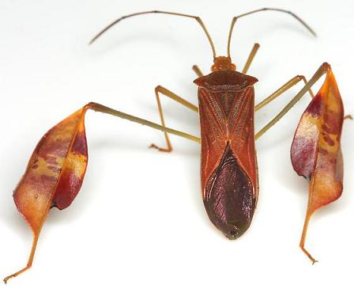

|
True
Bugs of Texas
Bug Photographs
Organized
by Family and Subfamily
|

|
Order Hemiptera - Suborder
Heteroptera
True Bugs
Infraorder Gerromorpha
Family Gerridae - Water
Striders
Family Hydrometridae -
Water Measurers
Family Mesoveliidae - Water
Treaders
Family Veliidae -
Smaller Water Striders
Infraorder Leptopodomorpha
Family Saldidae - Shore
Bugs
Infraorder Nepomorpha -
Aquatic Bugs
Family Belostomatidae -
Giant Water Bugs
Family Corixidae -
Water Boatmen
Family Gelastocoridae -
Toad Bugs
Family Naucoridae -
Creeping Water Bugs
Family Nepidae -
Waterscorpions
Family Notonectidae -
Backswimmers
Infraorder Cimicomorpha
Family
Tingidae -
Lace Bug
Family Miridae -
Plant Bugs
Family
Anthocoridae -
Minute Pirate Bugs
Family
Lasiochilidae
Family
Cimicidae -
Bed Bugs
Family
Nabidae -
Damsel Bugs
Family
Reduviidae -
Assassin Bugs
Subfamily Emesinae -
Thread-legged Bugs
Subfamily Ectrichodiinae
Subfamily Harpactorinae
Subfamily Microtominae
Subfamily Peiratinae -
Corsairs
Subfamily Phymatinae -
Ambush Bugs
Subfamily Reduviinae
Subfamily Saicinae
Subfamily Stenopodainae
Subfamily Triatominae - Kissing
Bugs
Infraorder Pentatomorpha
Family Aradidae - Flat Bugs
Superfamily Lygaeoidea
Family Berytidae -
Stilt Bugs
Family Blissidae
Family Cymidae
Family Geocoridae -
Big-eyed Bugs
Family Lygaeidae -
Seed Bugs
Family Pachygronthidae
Family Piesmatidae - Ash-gray
Leaf Bugs
Family Rhyparochromidae -
Dirt-colored Seed Bugs
Superfamily Pyrrhocoroidea
Family Largidae -
Bordered Plant Bugs
Family Pyrrhocoridae -
Red Bugs
Superfamily Coreoidea
Family Alydidae -
Broad-headed Bugs
Family Coreidae -
Leaf-footed Bugs
Family Rhopalidae -
Scentless Plant Bugs
Superfamily Pentatomoidea
Family
Cydnidae -
Burrowing Bugs
Family Pentatomidae - Stink
Bugs
Family
Scutelleridae -
Shield-backed Bugs
Family
Thyreocoridae -
Ebony Bugs
See also:
Selected References:
Baranowski, R.M. and J.A. Slater. 1986. Coreidae of Florida (Hemiptera,
Heteroptera). Arthropods of Florida and Neighboring Land Areas. Vol. 12. Florida Dept. of Agriculture and Consumer Services, Gainesville. viii + 82 pp. (Full PDF)
Barber,
H.G. 1906. Hemiptera from Southwestern Texas. Science Bulletin of the
Museum of the Brooklyn Institute of Arts and Sciences, 1(9): 255-289.
Blatchley, W.S. 1926. Heteroptera, or true bugs of eastern North
America, with especial reference to the faunas of Indiana and Florida.
The Nature Publishing Co., Indianapolis. 1116 pp.
Henry,
T.J. and R.C. Froeschner (eds.). 1988. Catalog of the
Heteroptera, or True Bugs, of Canada and the Continental United States.
E. J. Brill, New York. xix + 958 pp.
Schaefer, C.W. and A.R. Panizzi (eds). 2000.
Heteroptera of Economic Importance. CRC Press, Boca Raton, FL. xx + 828
pp. (Text)
Schuh, R.T. and J.A. Slater. 1995. True Bugs of the World (Hemiptera:
Heteroptera). Classification and Natural History. Cornell University
Press, Ithaca, New York. xii + 336 pp. (Text)
Slater, J.A. and R.M. Baranowski. 1978. How to know the True Bugs. Wm. C. Brown Company, Dubuque, Iowa. x + 256 pp.
Slater,
J.A. and R.M. Baranowski. 1990. The Lygaeidae of Florida (Hemiptera:
Lygaeidae). Arthropods of Florida and Neighboring Land Areas. Vol. 14.
Florida Dept. of Agriculture and Consumer Services, Division of Plant
Industry, Gainesville. xv + 211 pp.
Torre-Bueno, J. R. de la. 1912. Records of Heteroptera from Brownsville, Texas (Hemip.). Entomological News 23: 120-122.
Van
Duzee, E.P. 1917. Catalogue of the Hemiptera of American North of
Mexico: Excepting the Aphididae, Coccidae and Aleurodidae. Vol. 2.
University of California Press, Berkeley. i-xiv + 902 pp. (Full Text)
Pentatomoidea Bibliography - David A. Rider
31 Mar
2015 © Mike Quinn /
entomike@gmail.com
/ Texas
Entomology